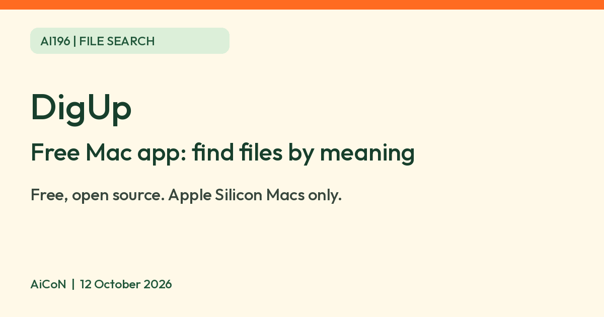

DigUp: a free Mac app that searches your files by what is in them, on your Mac
DigUp is a free, open-source Mac app that finds photos, PDFs, recordings and videos by what is in them. It needs an Apple Silicon Mac and runs on the Mac, per its developer.

What it is
DigUp is a small Mac app that searches your own files by what is in them, not just by file name. You describe what you want, such as "a dog on the beach" or "the clause about pets in the lease", and it looks through your photos, screenshots, PDFs, documents, audio and video. The developer says a video or recording can open at the matching moment and a PDF can open with your words in Preview's search. We did not test those results. Its GitHub page says it runs on Google DeepMind's EmbeddingGemma 2 model, entirely on your Mac.
Is it free?
Yes. The GitHub page says "Free and open source" under the MIT licence, with no account. There is no listed app charge. It still uses internet bandwidth, disk space, memory and processing time: the model is an 865 MB one-time download, and the first pass over a big folder "can take an hour".
Who can use it
- It needs a Mac with Apple Silicon (M1 or later) and macOS 14 or later. No Windows, Linux, iPhone or Android release is listed. The README says it has been tested on macOS 26; AiCoN did not test it.
- Its pages do not list countries. No India-availability statement was found on the official pages. Public repository access does not prove download or app operation in India; we did not test either.
- It searches in more than 100 languages, but the developer's own tests only covered English, Bengali and Arabic, and the page notes the model is not equally strong in every language.
What it reads, and what it does not
- The developer says it reads only the folders you pick: pictures, PDFs (scans too), documents, audio and video.
- It says it never reads keys, certificates, password files, hidden folders such as ~/.ssh, app bundles or caches. It says it only reads your files and never changes, moves or uploads them.
- Code search is off until you turn it on for chosen folders, per the developer. The README says cloud-only iCloud files are not downloaded and dataset-like folders are skipped. Long PDFs index their first 30 pages first, then the rest in the background, up to 5,000 pages per file.
Privacy
The GitHub page says nothing you index leaves your Mac. It goes online only to download the model once and to check for updates once a day. The update check sends nothing about your files and can be turned off, and the page says there is no account and no telemetry. These are the developer's statements, not an independent privacy or security audit. We did not inspect the code, network behaviour or installer. A local index still contains information about your files; protect the Mac and its backups and do not assume folder permissions replace a security review.
How to try it
- Open github.com/ARahim3/DigUp and download the DMG from Releases, or use the Homebrew command on that page.
- Check that the installer is the official release and your system meets the requirements before opening it. Do not bypass a macOS security warning just because an app is open source. If acceptable, wait for the model download and select a small non-sensitive folder first.
- Press Shift, Command and Space in any app and describe the file.
Limits to know
- It is very new. The first public release, 0.6.0, was on 9 October 2026, and the repository lists one main contributor.
- It is not Spotlight. The developer says the two work side by side.
- The README's removal instructions are to quit, remove DigUp.app and ~/Library/Application Support/DigUp (model and indexes), plus settings at ~/Library/Preferences/com.abdurrahim.DigUp.plist; its Homebrew --zap uninstall option is also documented. We did not test removal, and backup copies may remain. Take care not to remove unrelated files.
- AiCoN advice: start with one folder of non-sensitive files and see if the results suit you before indexing more.
- Not tested by AiCoN. We did not download, install, execute, grant permissions, index files, inspect code/network traffic or test deletion.
Frequently asked questions
Is DigUp free?
Yes. Its GitHub page says it is free and open source under the MIT licence.
Does it work on Windows?
No. The page says it needs an Apple Silicon Mac with macOS 14 or later.
Does it upload my files?
The developer says nothing you index leaves your Mac, and that it goes online only to download the model once and check for updates.
Does it replace exact file-name search?
No. The README says DigUp combines meaning-based ranking with exact-word matches in file names, document text and screenshot text. It is intended to work alongside Spotlight. Meaning-based results can miss or rank a file incorrectly.
What changed since this post?
Sources checked 12 October 2026. First public release remains 0.6.0 on 9 October 2026, and the repository is very new with one main contributor shown. Added staged PDF/iCloud limits, permission and local-index cautions, and clearer removal instructions. Privacy claims remain attributed to the developer and no India availability is asserted.
Sources: DigUp on GitHub, DigUp releases. Checked 12 October 2026.